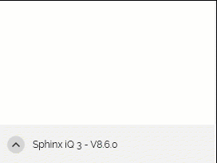

INSTALLATION DU LOGICIEL
Pour mener à bien vos projets d'enquêtes, veuillez d'abord à réussir l'installation de votre logiciel Sphinx iQ3 en suivant les étapes décrites ci-après.
Configuration requise
| CONFIGURATION RECOMMANDÉE | CONFIGURATION MINIMALE |
|---|---|
|
|
REMARQUE : Veuillez vous assurer que les pilotes de votre carte graphique sont bien à jour (dernière version disponible).
| SYSTÈME | NAVIGATEURS |
|---|---|
|
Pour une utilisation optimale des enquêtes en ligne, il est préférable de privilégier les versions les plus récentes des navigateurs ci-dessous :
|
Les flux arrivant sur le port 80 (http) sont automatiquement redirigés vers le port 443 (https).
REMARQUE : Si vous possédez une licence flottante, suivez la note :
https://infos.lesphinx.eu/docs/Installation_flottante_iQ3.pdf
Autorisations requises
Droits accès utilisateurs
Nos logiciels clients, Sphinx iQ3 et SphinxScan nécessitent les droits d’accès suivants :
-
Droit de lecture sur le répertoire %PROGRAMDATA%\Le Sphinx Développement (et ses sous-répertoires).
-
Contrôle total sur les répertoires suivants :
-
%APPDATA%\Le Sphinx Développement (et ses sous-répertoires).
-
%LOCALAPPDATA%\Le_Sphinx_Développement (et ses sous-répertoires).
-
Répertoire d’installation du logiciel (et ses sous-répertoires).
-
-
Droit de lecture sur la base de registre.
REMARQUE : Il est possible que la clé de licence devienne temporairement inaccessible en raison d'un problème lié au système, par exemple, si les droits d'accès de l'utilisateur exécutant Sphinx iQ3 ou SphinxScan sont modifiés pour l'un des éléments suivants :
- Entrées Sphinx dans la base de registre
- Fichiers Sphinx stockés dans le répertoire d'installation
- Répertoires %APPDATA% et/ou %PROGRAMDATA%
Pour l’installation ou la modification de la licence Sphinx iQ3 et SphinxScan, les droits d’écriture sur le répertoire %PROGRAMDATA%\Le Sphinx Développement (et ses sous-répertoires) et de modification sur la base de registre sont nécessaires.
Échanges entre Sphinx iQ3 et le serveur SphinxOnline
Le logiciel Sphinx iQ3 doit pouvoir échanger avec le serveur SphinxOnline afin de :
-
Déterminer s'il a le droit de s'exécuter dans le cas où la licence utilisée est de type flottante.
-
Afficher les news et vérifier la disponibilité d'une nouvelle version.
-
Tester l'enquête (en cliquant sur le bouton "Tester"), une publication est effectuée sur le serveur SphinxOnline avec la structure de l'enquête (sans les données).
Pour cela, il est nécessaire d'autoriser les flux sur :
-
217.182.188.204 : www.sphinxonline.com
-
217.182.188.203 : www.sphinxonline.net
Publication d'une enquête Sphinx iQ3
La publication d'une enquête depuis Sphinx iQ3 sur un serveur, nécessite une ouverture du flux HTTPS entre le logiciel Sphinx iQ3 et le serveur de publication utilisé.
Ce serveur de publication peut être le serveur mutualisé principal SphinxOnline (www.sphinxonline.com) ou n’importe quel autre serveur mutualisé (ou encore, un serveur dédié ou un serveur connect).
Veuillez noter que lors d'une publication d'une enquête, une archive ZIP chiffrée, protégée par mot de passe est également téléchargée en ligne (qui, contient potentiellement les données de l'enquête).
Module d'analyse (DATAVIV)
L’utilisation du module d'analyse du logiciel Sphinx iQ3 implique des échanges réseaux client/serveur entièrement en local sur la machine qui l’exécute :
Sphinx iQ3 est composé de plusieurs briques applicatives qui échangent entre elles via 3 protocoles réseaux différents :
-
Net.tcp pour Dataserver.
-
Http pour le service d'export et accès au module d'analyse.
-
Websocket pour service d'export de vues d'analyse.
Ces échanges se font toujours en utilisant le nom d’hôte « localhost ».
Chaque brique applicative utilise un port d’écoute déterminé dynamiquement au moment du lancement du logiciel parmi les ports TCP disponibles compris entre 1024 et 65535.
Veuillez vous assurer que votre solution logicielle antivirus/pare-feu, souvent installée sur la machine qui exécute Sphinx iQ3, ne bloque aucun de ces flux réseaux locaux pour que Sphinx iQ3 soit pleinement fonctionnel.
Installation du logiciel (licence monoposte)
Une licence monoposte est associée à une clé qui permet l'installation individuelle du logiciel.
Vous pouvez disposer d'une licence monoposte pour un nombre défini d'utilisateurs (nombre d'activations possibles).
Pour installer le logiciel procédez comme suit :
-
Téléchargez le fichier d'installation du logiciel « SetupSphinxiQ3.exe ».
-
Ouvrez l’explorateur de fichiers.
-
Affichez le contenu du dossier de téléchargement*.
* Le répertoire de stockage des fichiers téléchargés est défini dans le navigateur Internet.
-
Faites un double-clic sur l’icône « SetupSphinxiQ3.exe ».
REMARQUE : Vous devez être en mode administrateur pour installer et activer le logiciel.
-
Cliquez sur Suivant,
-
(Facultatif) Choisissez le répertoire d'installation des fichiers du logiciel en cliquant sur le bouton Modifier.
REMARQUE : Nous vous conseillons de conserver le répertoire proposé : C:\Program Files\SphinxiQ3.
-
Cliquez sur Suivant.
-
Cliquez sur Installer.
Un message vous confirme que l'installation s'est déroulée correctement.
-
Cliquez sur Terminer.


Installation d'une licence flottante
Accédez à la procédure d'installation d'une licence flottante.
Procédure d'installation silencieuse
Accédez à la procédure d’installation silencieuse.
Activation de la clé
À la première ouverture de Sphinx iQ3, le logiciel fonctionnera en mode démonstration. Pour accéder à la version complète, il vous faudra rentrer votre clé d’installation. Pour activer votre clé de licence, procédez comme suit :
-
Lancez votre logiciel en mode administrateur.
-
Sélectionnez l'option Vous avez une clé d'installation.
-
Entrez la clé d'installation qui vous a été communiquée par mail.
-
Cliquez sur Suivant.
-
En cas de connexion internet détectée, l'activation se fera automatiquement.
-
En cas d'absence de connexion internet (pas d'accès Internet, problème de connexion ou autre), une fenêtre précisant que le logiciel n'a pas été activé apparaîtra :
Si la connexion Internet n'est pas possible :
-
-
Sélectionnez l'option Activer par téléphone,
-
Relevez les codes C1 et C2 et transmettez les à nos services avec votre code client : par téléphone au : 04 50 69 82 98 ou par mail à l'adresse : contact@lesphinx.eu


REMARQUE : Cette activation est obligatoire. Tant qu'elle n'a pas été réalisée, votre logiciel fonctionnera en mode Démonstration.
Si vous rencontrez un problème lors de l'installation, veuillez nous contacter au 04 50 69 82 98.
Mettre à jour Sphinx iQ3
Si vous bénéficiez d’un contrat de maintenance, effectuez les mises à jour mineures de votre logiciel en cliquant sur le bouton Rechercher des mises à jour depuis le panneau d'accueil.

REMARQUE : Vous devez d'abord lancer votre logiciel en mode administrateur pour effectuer la mise à jour.
La recherche de mises à jour est réalisée directement à l’ouverture de Sphinx iQ3, sous réserve de disposer d’un accès internet.
Désinstaller ou déplacer une licence monoposte
Déplacer une licence monoposte :
La licence d'utilisation de Sphinx est installée sur un ordinateur A, nous souhaitons la déplacer sur l'ordinateur B. Pour déplacer une licence procédez comme suit :
-
Vérifiez que vous soyez bien en possession de votre clé d'installation.
-
Ouvrez votre logiciel sur le premier ordinateur.
-
Cliquez sur Gérer la licence depuis le panneau d'accueil.

-
Sélectionnez Vous voulez désactiver la licence.
REMARQUE : Veillez à ce que votre ordinateur soit connecté à internet avant de procéder à la désactivation de la licence.
-
Cliquez sur Suivant.
-
Activez votre licence sur le deuxième ordinateur (voir procédure ci-dessus).
Désinstaller le logiciel sur un poste :
Pour désinstaller le logiciel Sphinx iQ3 d'un poste, procédez comme suit :
-
Depuis le Panneau de configuration Windows, cliquez sur Désinstaller un programme.
-
Sélectionnez le logiciel Sphinx iQ3 depuis la liste des programmes.
-
Cliquez sur Oui dans le dialogue qui apparaît.
La désactivation de la clef d’installation se fera automatiquement à la désinstallation. Il est donc nécessaire d’avoir une connexion internet active à ce moment.
REMARQUE : La désinstallation du logiciel n’affecte pas vos fichiers d’enquête.
La suppression de Sphinx iQ3 depuis un poste n’entraîne en aucun cas la suppression des fichiers de travail associés (fichiers d’enquête, bases de données, exports, etc.).
Ces fichiers restent présents sur le disque local, sauf suppression manuelle de votre part. Il est donc recommandé de les sauvegarder régulièrement, notamment si vous prévoyez de réinstaller le logiciel ou de changer de poste.